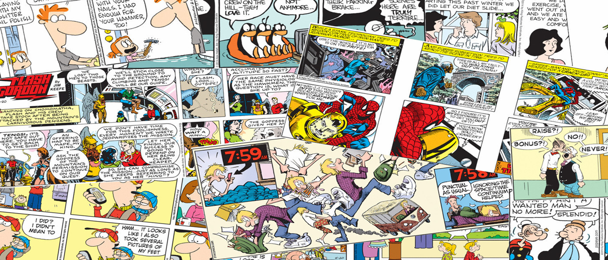

Mapas conceptuales y mentales
- Mindomo es un generador de una gran variedad de tipos de mapas conceptuales. Debe registrarse para poder guardar los resultados en la computadora.
- Mindmeister es una herramienta que permite trabajar colaborativamente en la creación y desarrollo de mapas mentales en tiempo real pero además tiene la opción de importar mapas de Freemind, MindManager o en formato PDF. La modalidad “Basic” es gratuita y requiere registrarse.
- Bubbl.us y Coggle son aplicaciones online con la que se pueden crear esquemas y mapas mentales de forma gratuita para después imprimirlos o insertarlos en una web.
Cómics y dibujos animados

- Comix. Generador de historietas en línea para expresar ideas en forma de cómic.
- Witty Comics. Generador de cómics que permite guardar el resultado en un servidor o en la propia computadora en formato PNG. Requiere registrarse.
- Bitmoji. Generador de Emojic muy completo. Permite personalizar expresiones, añadir efectos y crear personajes propios, El resultado se puede enviar por email o publicarse en una web. Requiere registrarse.
- Pixton es otro generador de tiras cómicas muy completo y versátil. Permite personalizar los fondos y los personajes, añadirles expresiones y posturas, y acercar o alejar los elementos que conforman cada escena. El resultado se puede enviar por correo o insertarse en una web. Requiere registrarse.
- Vyond es una herramienta que permite la creación de dibujos animados donde se puede elegir escenarios y personajes, utilizar imágenes propias o añadir sonidos y bocadillos de texto.